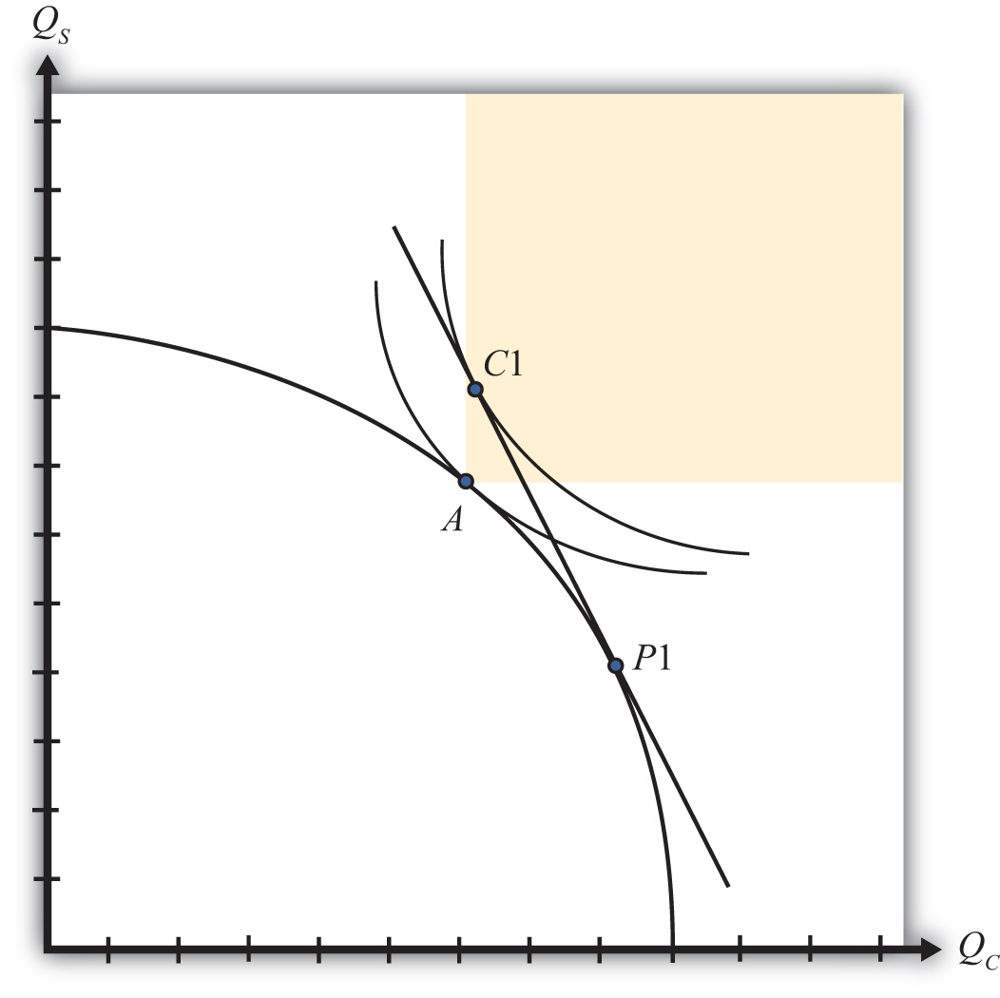

The Heckscher-Ohlin model generates several important conclusions for a country that moves from autarky to free trade:
A reasonable question at this juncture, then, is whether the gains to some individuals exceed the losses to others and, if so, whether it is possible to redistribute income to ensure that everyone is absolutely better off with trade than he or she was in autarky. In other words, is it possible for the winners from free trade to compensate the losers in such a way that everyone is left better off than he or she was in autarky?
The answer to this is yes in most circumstances. The primary reason is that the move to free trade improves production and consumption efficiency, which can make it possible for the country to consume more of both goods with trade compared to autarky.
Consider Figure 5.10 "Compensation in the H-O Model". Point A on the PPF represents the autarky production and consumption point for this economy. The shaded region represents the set of consumption points that provides at least as much of one good and more of the other relative to the autarky equilibrium. Suppose that in free trade production moves to P1 and consumption moves to C1. Since C1 lies within the shaded region, the country consumes more clothing and more steel in the aggregate than it had consumed in autarky. However, in moving from autarky to free trade, some factors have experienced increases in income, while others have suffered losses. This means that some individuals consume less of both goods in free trade, while others consume more of both goods.
Figure 5.10 Compensation in the H-O Model
However, since there are more of both goods in the aggregate, it is conceivable that government intervention, which takes some of the extra goods away from the winners, could sufficiently compensate the losers and leave everyone better off in trade.
The possibility of an effective redistribution depends in some circumstances on the way in which the redistribution is implemented. For example, taxes and subsidies could redistribute income from winners to losers but would simultaneously affect the domestic prices of the goods, which would affect consumption decisions and so on. With the secondary effects of taxes and subsidies, it becomes uncertain whether a redistribution policy would work. For this reason, economists will often talk about making a lump-sum redistribution or transfer. Lump-sum transfers are analogous to the transfers from rich to poor made by the infamous character Robin Hood. Essentially, goods must be stolen away from the winners, after they have made their consumption choices, and given to the losers, also after they have made their consumption choices. Furthermore, the winners and losers must not know or expect that a redistribution will be made, lest that knowledge affect their consumption choices beforehand. Thus a lump-sum redistribution is exactly what Robin Hood achieves. He steals from the wealthy, after they’ve purchased their goods, and gives to the poor, who were not expecting such a gift.
Although lump-sum compensations make perfect sense in theory, or in principle, it is worth noting how impractical they are. There is no government that has tried to institutionalize this process by creating a Division of Robin Hoodian Transfers. In practice, lump-sum transfers rarely occur.
Compensation may not always be as straightforward as in the previous example, however. Another possible outcome in a free trade equilibrium is for more of one good to be consumed but less of another relative to autarky. In other words, the free trade consumption point may occur at a point like C2 in Figure 5.11 "Compensation Difficulties". In this case, it would not be possible to compensate everyone with as much steel as they had in autarky since the economy is consuming less steel in the free trade equilibrium. However, even in this case it is potentially possible to arrange a redistribution scheme. The reason is that the economy could potentially choose a consumption point along the red line segment, as at point C1 Since the red segment lies in the range in which more of both goods is available, compensation to make everyone better off with trade remains a possibility.
Figure 5.11 Compensation Difficulties

Thus it is always possible to find a free trade consumption point and an appropriate lump-sum compensation scheme such that everyone is at least as well off with trade as they had been in autarky.
Jeopardy Questions. As in the popular television game show, you are given an answer to a question and you must respond with the question. For example, if the answer is “a tax on imports,” then the correct question is “What is a tariff?”